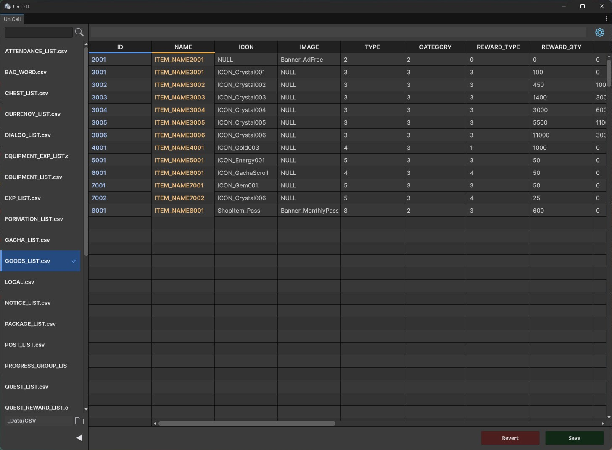

UniGit · UniCellUnity 에디터 도구
Git과 데이터 편집을Unity 안에서 끝냅니다.
Clash Tactica를 개발하면서 직접 만들어 쓰는 Unity 에디터 확장입니다. 버전 관리와 게임 데이터 편집을 에디터를 떠나지 않고 처리합니다.
UniCell
CSV·TSV·ScriptableObject 테이블을 스프레드시트처럼 편집합니다. 수백 줄짜리 밸런스 데이터도 Unity 창 하나에서 바로 수정합니다.
- 셀 선택, 복사·붙여넣기, 행·열 삽입과 삭제
- 정렬과 텍스트 필터
- 컬럼 규칙, ID 수식, 밸런스 팩터 카드
- 런타임에서 불러올 수 있는 ScriptableObject 테이블

UniGit
Unity 에디터 안에 들어간 Git 클라이언트입니다. 커밋부터 GitHub 연동까지 터미널 없이 처리합니다.
기본 Git 작업
스테이징, 커밋, 푸시·풀·페치, 브랜치, 스태시, 체리픽, 리셋을 버튼으로 처리합니다.
CSV 셀 단위 비교
게임 데이터 CSV는 바뀐 셀만 나란히 비교해 보여줍니다.
커밋 기록
작성자·날짜·메시지와 바뀐 파일을 보고, 파일별 기록과 앞선·뒤처진 커밋 수를 확인합니다.
Project 창 연동
파일과 폴더에 변경 상태를 색 점으로 표시하고, 우클릭으로 커밋·되돌리기·기록 보기를 엽니다.
GitHub 연동
에디터에서 GitHub에 로그인하고 저장소를 만들거나 복제합니다.
설정 마법사
Git 확인, 사용자 정보, GitHub 연동, 프로젝트 설정을 4단계로 안내하고 Unity용 .gitignore를 만들어 줍니다.
한눈에 보기
- 분류
- Unity 에디터 도구
- UniGit 환경
- Unity 2021.3 LTS 이상, Git 2.20 이상, Windows·macOS·Linux
- UniCell 형식
- CSV, TSV, ScriptableObject